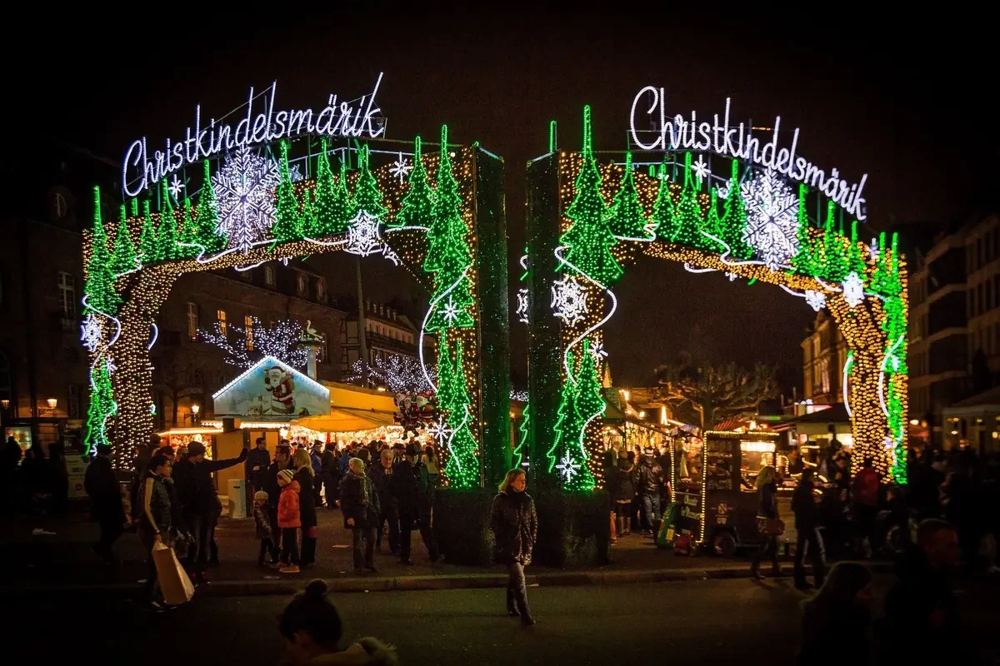
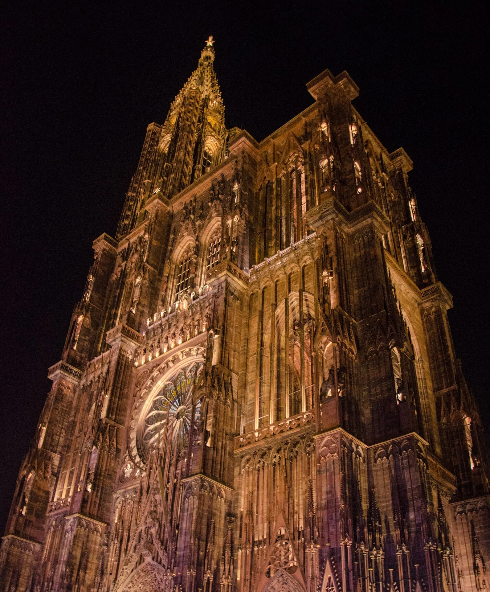
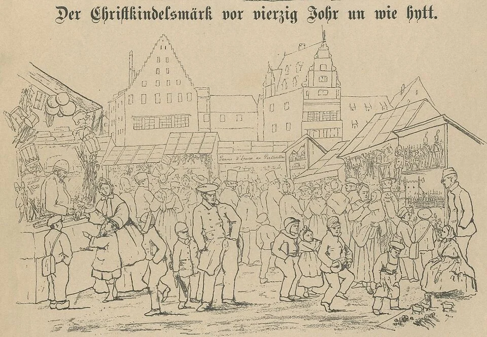
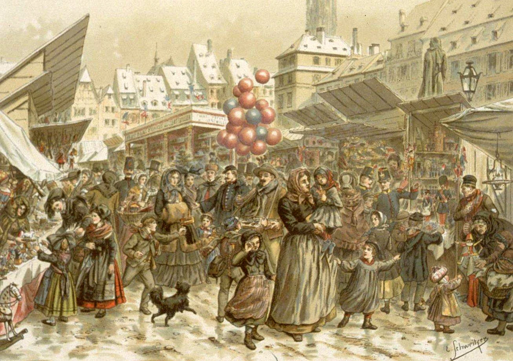
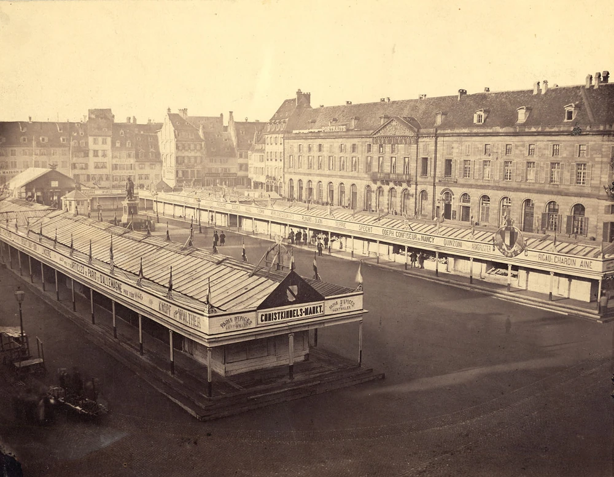
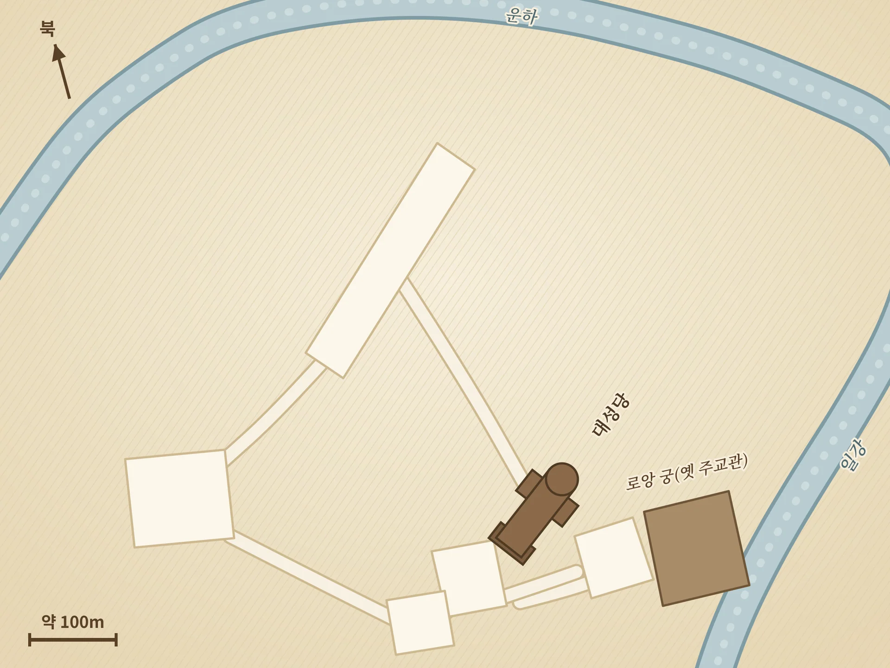
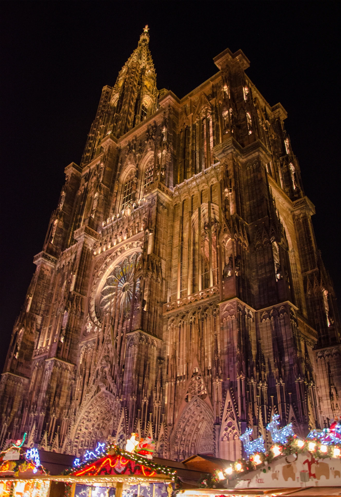

아직 펼치지 않은 카드아기 예수의 장터 · 1스트라스부르 크리스트킨델스메릭1570년, 이 도시의 성탄 시장은 이름을 바꿨어요. 원래는 누구의 이름이 붙은 시장이었을까요?이 시장 이름은 원래 다른 사람 이름이었대. 누구였을까?
1570년 ~ 오늘프랑스 스트라스부르 · 대성당 둘레의 옛 시가지
스트라스부르 크리스트킨델스메릭
1570년 성탄 앞, 프랑스 스트라스부르 대성당 앞마당에 ‘아기 예수 시장’이 처음 섰어요. 그 뒤 450년 동안 장은 이름을 지킨 채 도시 여기저기로 자리를 옮겼어요. 오늘 저녁의 장터에서 출발해, 그 길을 지도 위에서 거꾸로 걸어 보세요.
아주 옛날, 프랑스 스트라스부르의 큰 성당 앞에 ‘아기 예수 시장’이 처음 열렸어. 지금 장터에서 출발해서, 처음 장이 열린 곳까지 지도로 거꾸로 걸어 볼까?
검수 전 시안이에요(기준서 2판). 장면에는 기록에 있는 것만 옮겼고, 기록마다 다른 점은 따로 밝혔어요. 지도는 1888년 옛 지도를 바탕으로 이 안내서가 그렸어요. 상상은 ‘눈 감고 상상해 보기’에만 썼어요.
시안 확인용카드 단계 미리 보기
1
성인의 장에서 아기 예수의 장으로
1570년 겨울, 스트라스부르 대성당은 개신교 교회였어요. 이곳에서는 1529년에 미사가 그쳤고, 1681년까지 개신교 예배를 드렸어요(1550~1560년만 빼고요).
그 전까지는 12월 6일 성 니콜라스 축일을 앞두고 사흘 동안 대성당 둘레에 ‘클라우젠메릭’(니콜라스 장)이 섰어요. 종교개혁 뒤 성인 공경이 금지되자, 1570년 시는 이 장을 없앴어요.

플리너라는 목사가 성 니콜라스 축제를 바꾸자고 했고, 시의 ‘21인 의회’가 정했다고 전해요. 이제 장은 성탄 사흘 전, 대성당 앞마당에 섰어요.
새 장의 이름은 ‘아기 예수 시장’, 알자스 말로 크리스트킨델스메릭이에요.
옛날엔 니콜라스 성인을 기리는 장이었는데, 1570년부터 ‘아기 예수 장’이 됐어.
물어보기장 이름이 ‘아기 예수’로 바뀌면, 무엇이 달라질까?
2
아이들을 위한 장, 1785년
200여 년 뒤인 1785년, 알자스 귀족 오베르키르슈 남작 부인(baronne d’Oberkirch, 1754~1803)이 스트라스부르에서 겨울을 보냈어요. 부인은 회고록에 그해 성탄 장을 이렇게 적었어요.

“이 장은 아이들을 위한 것이에요. 성탄 앞 한 주 동안 서고, 자정까지 이어져요. 대성당 가까이, 주교관 쪽 ‘프론호프’라 부르는 광장에서 열려요.”
오베르키르슈 남작 부인, 『회고록』 2권 29장(1785년) · 프랑스어를 이 안내서가 우리말로 옮김
부인은 또 적었어요. 집집마다 초와 사탕으로 덮은 전나무를 마련하고, 착한 아이에게 상을 줄 ‘크리스트킨델’(아기 예수)을 기다린다고요. 말 안 듣는 아이를 찾아 혼낸다는 ‘한스트라프’도 두려워했대요.
프론호프는 오늘의 샤토 광장, 로앙 궁 앞의 광장이에요. 위 그림은 1850년 무렵 이 광장에 선 장을 그린 것으로 소개돼요.
200년 전엔 아이들을 위한 장이었대. 밤 열두 시까지 열렸대!
물어보기밤 열두 시까지 여는 장에 간다면, 무엇부터 보고 싶어?
3
광장 밖으로 나간 장
19세기에 장은 엿새로 늘었어요. 1863년에는 하루가 더 늘고, 대성당에서 조금 떨어진 클레베르 광장까지 넓어졌어요.
그 무렵에는 성탄 다음 날인 12월 26일(성 스테파노 축일)에 여는 ‘성탄 장’도 따로 있었어요. 19세기 후반에 두 장은 하나가 되었고, 장은 대림절 내내 1월까지 이어지게 되었어요.


왼쪽은 화가 에밀 슈바이처가 1894년에 그린 ‘1859년 클레베르 광장의 성탄 장’이에요. 오른쪽은 1866년 같은 광장을 찍은 사진이에요.
사진 속 가게 지붕 끝 간판에 ‘크리스트킨델스 마르크트’라고 쓰여 있어요. 그 양옆 간판에는 ‘팽 데피스’(꿀과 향신료를 넣은 빵)라는 글씨도 보여요.
옛날 그림이랑 옛날 사진이야. 같은 광장이래! 풍선 다발을 든 사람이 보여?
물어보기그림 속 아이들은 무엇을 사고 싶었을까?
4
오늘 저녁, 처음 자리까지
이제 오늘 저녁의 장터에서 출발해, 이 장이 걸어온 길을 거꾸로 걸어 봐요. 지금 장터의 한가운데인 브로이 광장에서, 처음 장이 선 대성당 앞마당까지예요.
지도는 1888년 옛 지도를 바탕으로 이 안내서가 그린 길잡이 그림이에요. 거리와 모양은 실제와 조금 다를 수 있어요.
‘다음 곳으로’를 눌러, 오늘의 장터에서 처음 자리까지 거꾸로 걸어 보세요.

브로이 광장클레베르 광장샤토 광장대성당 앞스트라스부르 옛 시가지 길잡이 지도(옛 지도처럼 북쪽이 조금 왼쪽으로 기울었어요) · 이 안내서가 그린 길잡이 지도 · 1888년 마이어 백과사전 지도(퍼블릭 도메인)를 바탕으로
처음 장이 선 자리에 왔어요. 450년을 거슬러 걸었어요.
자리도 날짜도 바뀌었지만, 1570년부터 이 장은 ‘크리스트킨델스메릭’이라는 이름을 지켜 왔어요.
지금 장터에서 출발해서, 처음 장이 열린 곳까지 거꾸로 걸어가 보자!
물어보기처음 장이 열린 곳에는 무엇이 있을까?
5
다시 처음 자리로
1991년, 장은 다시 대성당 광장으로 돌아왔어요. 1570년 첫 장이 선 바로 그 발치예요.
첫 장면에서 본 그 대성당이에요. 이번에는 발치에 작은 나무 가게들이 줄지어 불을 밝혔어요.

처음 본 그 성당이야! 이번엔 발밑에 작은 가게들이 반짝반짝해.
물어보기처음 자리로 돌아온 장, 무엇이 제일 반가울까?
눈 감고 상상해 보기
눈을 감아 보세요. 1785년 성탄 앞 저녁, 대성당 옆 광장에 작은 가게들이 불을 밝혀요. 아이들이 어른 손을 잡고 가게 사이를 누비고, 어디선가 꿀 빵 냄새가 나요. 집에 돌아가면 초와 사탕을 단 전나무가 기다리겠지요. 그 위로 대성당 탑이 밤하늘 높이 솟아 있어요.
눈을 감아 봐. 깜깜한 밤, 성당 옆에 작은 가게들이 반짝반짝. 집에 가면 초랑 사탕을 단 나무가 기다려!
나의 자리
장은 400년 넘게 도시를 옮겨 다니다, 처음 이름을 얻은 대성당 발치로 돌아왔어요. 나에게도 다시 돌아가 서 보고 싶은 ‘처음 자리’가 있나요?
장터가 빙 돌아서 처음 자리로 돌아왔어. 너도 다시 가 보고 싶은 처음 자리가 있어?
마음에 닿는 한 줄을 고르거나 직접 써 보세요. 한 줄을 남기면 이 자리의 도장이 찍혀요. 이 기기에만 저장돼요.
더 깊이
궁금한 칸만 펼쳐 읽어도 괜찮아요.
알고 보면
크리스트킨델 알자스 말로 ‘아기 예수’예요. 스트라스부르시는 16세기에 생긴 아기 예수의 모습으로 소개해요. 흰 옷을 입은 젊은 여인으로 그려지고, 12월 24일 저녁 착한 아이들에게 선물을 줘요. 처음엔 개신교 집안의 풍습이었는데, 19세기 끝 무렵 가톨릭 집안에도 들어갔고, 몇 세대 뒤에는 산타클로스가 그 자리를 대신했어요.
대성당 천문시계 장의 이름이 바뀐 이듬해부터, 대성당 안에서는 콘라트 다지포디우스의 감독으로 천문시계를 만들었어요(1571~1574년).
샤토 광장 처음 이름은 ‘프론호프’예요. 13세기 초 스트라스부르 주교가 이 광장의 경계를 정했다고 해요. 1732~1742년에는 로앙 가문의 주교들을 위해 광장 옆에 로앙 궁을 지었어요.
오베르키르슈 남작 부인 알자스의 귀족(1754~1803)이에요. 이 카드는 부인의 회고록 1869년 파리 판을 따랐고, 1785년 겨울 이야기는 2권 29장에 있어요.
기록마다 다른 점
누가 정했나 2019년 시 안내지는 ‘스트라스부르 시 당국’이 니콜라스 장을 없앴다고만 적었어요. 프랑스 축제 안내(Festival en France)는 플리너 목사가 성 니콜라스 축제를 바꾸자고 했고, ‘21인 의회’가 정했다고 적었어요.
브로이 광장은 언제부터 스트라스부르시 성탄 누리집과 축제 안내는 1871년이라고 적었어요. 2019년 시 안내지는 ‘제국령 시절(1870~1918)’이라고만 적었어요.
1859년의 클레베르 광장 2019년 시 안내지는 장이 1863년에 클레베르 광장까지 넓어졌다고 적었어요. 그런데 슈바이처가 1894년에 그린 그림의 제목은 ‘1859년 클레베르 광장의 성탄 장’이에요. 1859년 이 광장에 선 장이 12월 26일에 여는 ‘성탄 장’이었는지는 기록으로 확인하지 못했어요.
1850년 무렵의 그림 위키미디어 공용은 이 그림을 1850년 작품, 샤토 광장의 크리스트킨델스메릭으로 소개해요. 실린 잡지가 언제 나왔는지는 확인하지 못했어요.
직접 가 보기
확인한 날 · 2026년 11월 18일 · 바뀌기 쉬운 정보라 정기적으로 다시 확인해요
이 카드의 네 곳(브로이 광장, 클레베르 광장, 샤토 광장, 대성당 앞)은 모두 물길로 둘러싸인 옛 시가지 섬 안에 있어서 걸어서 이어 갈 수 있어요.
2026년 장은 11월 27일(금)부터 12월 24일까지 열려요. 시간과 장소는 스트라스부르시 성탄 누리집에서 다시 확인해 주세요.
처음 자리까지 금박
오늘의 브로이 광장에서 1570년의 대성당 앞마당까지, 지도 위 길을 끝까지 따라가면 카드에 금박이 입혀져요.
브로이 광장 → 클레베르 광장 → 샤토 광장 → 대성당 앞마당
아이들의 장처럼 채색
1785년의 이 장은 아이들을 위한 장이었어요. 아이와 함께 끝까지 보면 카드가 채색돼요.
아이와 함께 ‘영화처럼 보기’를 끝까지 보기
근거 보기 (10)
- 오베르키르슈 남작 부인, 『회고록』 2권 29장(1869 파리 샤르팡티에 판, archive.org) — 1785년 겨울, 아이들을 위한 장, 성탄 앞 한 주·자정까지, 대성당 가까이 주교관 쪽 프론호프, 초와 사탕을 단 전나무, 크리스트킨델과 한스트라프
- 스트라스부르시 성탄 누리집: 크리스트킨델스메릭 매거진 — 중세 12월 6일 무렵의 성 니콜라스 장, 1570년 이름, 자리와 날짜가 바뀌어 옴, 1871년 브로이 광장, 12월 26일 성탄 장과 합쳐짐, 대림절 내내 1월까지, 1991년, 2026년 날짜
- 스트라스부르시 성탄 누리집: 크리스트킨델 — 16세기 아기 예수의 모습, 흰 옷의 젊은 여인, 12월 24일 저녁 선물, 개신교에서 시작, 19세기 끝 가톨릭 집안, 산타클로스, 1570년 장의 이름
- 스트라스부르시, 2019년 성탄 안내지(독일어 PDF) ‘성탄 장터 짧은 역사’ — 사흘 동안의 클라우젠메릭, 1570년 시 당국, 성탄 사흘 전 대성당 앞마당, 샤토 광장·메르시에르 거리로 퍼짐, 19세기 엿새, 1863년 클레베르 광장, 제국령 시절 브로이 광장, 1991년 대성당 광장
- Festival en France: 스트라스부르 성탄 장터 — 1570년 21인 의회의 결정, 플리너 목사, 성탄 며칠 전, 1871년 브로이 광장, 클레베르 광장의 30m 나무
- 프랑스 개신교 박물관: 스트라스부르 대성당 — 1529~1681년 개신교 예배(1550~1560년 빼고), 1529년 미사가 그침, 1571~1574년 천문시계
- 스트라스부르시: 샤토 광장 — 옛 이름 프론호프, 13세기 초 주교가 경계를 정함
- 스트라스부르시: 왕의 자유 도시에서 산업화까지(1681~1871) — 로앙 궁 1732~1742년, 로앙 가문 주교들을 위해 지음
- 위키미디어 공용: 1850년 무렵 그림(스트라스부르 판화·소묘관), 슈바이처 그림(1894, 스트라스부르 국립대학도서관), 빈터 사진(1866, 스트라스부르 현대미술관), Zéphyrios 사진(2016)의 파일 정보
- 위키미디어 공용: 1888년 마이어 백과사전 스트라스부르 지도(길잡이 지도의 바탕)
그림·사진·소리 출처
- 사진: Zéphyrios · CC0 · 위키미디어 공용 · 아래쪽 장터 가게를 잘라 냄
- 그린 사람 모름 · 스트라스부르 판화·소묘관 · 퍼블릭 도메인 · 위키미디어 공용
- 그림: 에밀 슈바이처 · 스트라스부르 국립대학도서관 · 퍼블릭 도메인 · 위키미디어 공용(Gallica)
- 사진: 샤를 다비드 빈터 · 스트라스부르 현대미술관 · 퍼블릭 도메인 · 위키미디어 공용
- 이 안내서가 그린 길잡이 지도 · 1888년 마이어 백과사전 지도(퍼블릭 도메인)를 바탕으로
- 사진: Zéphyrios · CC0 · 위키미디어 공용 · 가게 사람들이 보이는 맨 아래를 잘라 냄
- 사진: Claude Truong-Ngoc · CC BY-SA 3.0 · 위키미디어 공용
‘처음 만나는 기독교 문화’의 깊은 카드예요. 카드 단계와 남긴 글은 이 기기에만 저장돼요.